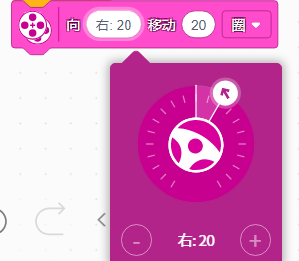

組底盤、移動與轉向、繞過積木
今天結束時：你們的車能走直線、轉直角、走正方形。
三人一台車用 LEGO 官方 SPIKE App共 50 分鐘
填好身分，找齊今天要用的東西。三人一台車。
講法
「三分鐘找齊三樣，打開官方 App 先放著。」
卡點
- 學生開始拼：先看下一頁的影片。少零件：記下，用備用零件補。
按播放，看 LEGO 的車子怎麼動。
LEGO 官方影片．點畫面放大．播不出來就按 打開官方課程 → 第 1 課
講法
「先看車子會做哪些動作：直走、後退、轉彎。」
卡點
- 影片播不出來：投影老師電腦的官方 App 第 1 課第 1 頁。
照搭建手冊從第 1 步組，最後照手冊接線：左輪 C、右輪 D，E 照手冊接。
打開官方 App 左邊「搭建手冊」→「驅動底座 1」。
找不到？打開搭建手冊
- 從手冊第 1 步開始。
- 接線照手冊最後一頁：C、D、E，看清楚哪一條插哪個口。
講法
「看圖拼，不要猜。左右：站在車子後面往前看。」
卡點
- 組超過 10 分鐘：老師補一半或換備用車。
- 輪子卡住：輪軸插到底了嗎？
- 線太短接不到 C、D：插夠得到的口，接口格照實際填，「將運轉電機設置為」也要照改。
答對拿一顆星。答錯會告訴你為什麼，可以再選。
1. 站在車子後面往前看，左輪接哪個口？
2. 線垂在輪子旁邊，會怎樣？
藍色和粉色都能讓輪子轉。差別是：一次管幾顆馬達。
藍色「馬達」（App：電機）
一次只管一顆馬達，積木前面要選接口（C、D…）。
- C 運行 ↻ 1 圈
- 讓 C 這顆馬達轉 1 圈就停。↻／↺ 選轉的方向；圈也能改成秒、度。
- C 啟動電機 ↻
- C 一直轉，不會自己停。
- C 關閉電機
- C 停下來。
- C 將速度設置為 75 %
- C 轉多快。
粉色「運動」
兩顆馬達一起當成一台車，一塊就能讓車走。
- 將運轉電機設置為 C+D
- 哪兩顆馬達是輪子。
- 將運動速度設置為 50 %
- 車子開多快。
- 將電機旋轉一圈設置為 ？ 厘米
- 輪子轉一圈，車走幾公分。
- ↑ 移動 20 厘米
- ↑ 前進、↓ 後退，走多遠。厘米就是公分。
- 向 右:100 移動 1 圈
- 轉彎（等一下學）。
- 停止運動
- 車子停下來。
單位：圈、度、秒、厘米、英寸 積木最後那格（例如「C 運行 ↻ 1
圈」的「圈」）點開可以換單位：
| 單位 | 意思 | 藍色 | 粉色 |
|---|
| 圈 | 輪子轉幾圈。1 圈＝轉一整圈回到原來的樣子，0.5 圈＝半圈。 | ✓ | ✓ |
| 度 | 輪子轉幾度。360 度＝1 圈，180 度＝半圈，90 度＝四分之一圈。比圈更細，適合轉一點點。（是輪子轉的度數，不是車子轉的角度） | ✓ | ✓ |
| 秒 | 轉幾秒就停。走多遠要看速度：速度快，同樣幾秒走得比較遠。 | ✓ | ✓ |
| 厘米 | 車走幾公分（厘米就是公分）。是從「圈」換算出來的，看下面。 | ✗ | ✓ |
| 英寸 | 美國常用的長度，1 英寸 ≈ 2.54 公分。和厘米一樣是換算出來的；我們用厘米就好。 | ✗ | ✓ |
藍色只管一顆馬達，不知道車走多遠，所以沒有「厘米」「英寸」。粉色轉彎那塊「向 ○ 移動」也只有圈、度、秒。
「厘米」是怎麼算出來的？
主機只會數輪子轉了幾圈，它看不到車走了幾公分。公分是用輪子的大小算出來的：
- 輪子轉 1 圈，車走的距離＝輪子一圈的長度＝直徑 × 3.14。直徑多少？等一下用尺量你們的輪子。
- 這就是粉色「將電機旋轉一圈設置為 ？ 厘米」在做的事：告訴主機輪子一圈走幾公分。
- 寫「↑ 移動 20 厘米」，主機就算 20 ÷ 一圈幾公分，算出輪子要轉幾圈。
速度是什麼？ 速度＝多快，用 % 表示，100 % 最快。速度只管快慢；走多遠，看「移動」那塊的數字。真的是這樣嗎？等一下自己試。
講法
「藍色一次只能叫一個輪子轉；粉色把兩個輪子綁成一台車。主機只會數圈，公分是用輪子大小算的。」可以拿一個輪子，用尺量直徑，請學生算算看是不是接近 17.5。
App 上的字
App 只有簡體中文，字形和頁面上的繁體略有不同（例如「電機」「運動」），意思一樣；學生問就說「同一個字的另一種寫法」。藍色類別 App 上叫「電機」，頁面統一說「馬達」。
英文
run for／start motor／stop motor／set speed；set movement motors／set movement speed／set 1 motor rotation／move for／move with steering／stop moving。
開車用粉色。每支程式開頭先放「設定三塊」，再放「移動」。
當程式啟動時將運轉電機設置為 C+D將運動速度設置為 50 %將電機旋轉一圈設置為 ？ 厘米↑ 移動 20 厘米
- 設定三塊
- 哪兩顆馬達是輪子（C+D）、開多快（50 %）、輪子一圈走幾公分（等一下自己量）。
- ↑ 移動 20 厘米
- ↑ 前進、↓ 後退，走 20 公分。
先讓車前進 20 公分，再試試看：速度改了會怎樣？藍色積木會怎樣？
1. 自己量，走出剛好 20 公分
- 官方 App 首頁「新建項目」→「詞語模塊」→「創建」。按左上角黃色「連接」，選你們的主機。
- 用尺量輪子的直徑，算輪子轉一圈走幾公分。
- 照右邊的圖排積木，把算出來的數字填進「將電機旋轉一圈設置為 ？ 厘米」。
- 找一條桌邊或地磚線當起點線，車頭前緣對齊，按 ▶。量車頭前緣走了幾公分。
- 沒有剛好 20：只改那個數字，再試。
當程式啟動時將運轉電機設置為 C+D將運動速度設置為 50 %將電機旋轉一圈設置為 ？ 厘米↑ 移動 20 厘米
車走了 23 公分，超過 20。那個數字要？
2. 速度試試看
只改「將運動速度設置為」的數字，其他不動，每次都量。
先猜：速度 50 改成 100，車會？
試完再回來看。
速度只管快慢。走多遠是「移動 20 厘米」決定的，所以速度改了，還是走大約 20 公分，只是比較快到。
我們發現：速度改大，車子
3. 藍色試試看
- 速度改回 50。把「↑ 移動 20 厘米」拖走，換成藍色「C 運行 ↻ 1 圈」（左邊「電機」類）。
- 按 ▶，看哪個輪子轉、車子怎麼動。
- 看完換回「↑ 移動 20 厘米」。
當程式啟動時設定三塊（和剛才一樣）C 運行 ↻ 1 圈
車子
進階
- 把 ↑ 改成 ↓，車子怎麼動？
- 藍色再加一塊「D 運行 1 圈」接在下面，車子會直走嗎？為什麼？
講法
「先量輪子、自己算，不要問別人答案。一次只改一個數字。尺從起點線量到車頭前緣。」速度試完問：「速度改了，距離有變嗎？那距離是誰決定的？」藍色試完問：「只叫 C 轉，D 沒動，車子會怎樣？所以開車用哪一種比較方便？」
卡點
- 車不動：「將運轉電機設置為」是 C+D 嗎？連接還在嗎？積木有沒有接在「當程式啟動時」下面（要貼緊）？
- 車往後走：A、B 線對調。
- 速度 100 多走一點：衝太快停不住，正常。
- 藍色積木讓車往後歪：↻／↺ 是馬達自己的方向，左右輪馬達裝的方向相反，正常。
- 時間不夠：速度只試 20 和 100；藍色由老師示範。
參考（不要直接給）
官方小輪子直徑約 5.6 公分，5.6 × 3.14 ≈ 17.6，官方範例填 17.5。學生填 17～18 都合理，差一點是打滑、對準造成的。
同樣走 20 公分，換成圈、度、秒，各要填多少？跑車子試出來。
1. 先量輪徑
輪子直徑 公分，轉一圈走 公分。
還沒量？回「動手」那一頁，用尺量輪子直徑，乘 3.14。
2. 跑車子試試看
- 把「↑ 移動 20 厘米」最後那格換成圈、度、秒，數字照表改。
- 每換一次都按 ▶，量車走了幾公分。不是 20 就改數字再試。
當程式啟動時設定三塊（和剛才一樣）↑ 移動 ？ ○
為什麼「秒」最難剛好走 20 公分？
講法
「同樣 20 公分，可以用不同單位寫。每一種都跑車子試，差多少就改多少。」想算的學生可以用輪徑算，但不要求。
參考（不要直接給）
一圈約 17.5 公分時：20 ÷ 17.5 ≈ 1.14 圈；1.14 × 360 ≈ 411 度；秒依車子速度而定，要實測。
卡點
- 度不知道從哪裡開始：圈試出來以後，想想 1 圈是幾度。
- 秒走太遠或太近：速度是不是 50 %？只改秒數。
- 還沒量輪徑：回動手頁量。
轉彎用這一塊。它有三格，一格一格看。
向 右:25 移動 1 圈「轉向移動」積木
English：move with steering
①右:25 ②1 ③圈
① 右:25往哪邊、彎多急（叫「轉向值」）。它不是角度。
② 1輪子要轉多少（不是車子轉多少）。
③ 圈②的單位。這一塊只能選圈、度、秒，沒有厘米。
① 轉向值：往哪邊、彎多急
- 往右是正數，積木寫「右:50」；往左是負數，積木寫「左:-50」。
- 0：直直走。數字越大（不管正負），兩個輪子速度差越多，彎得越急。
- 100（或 -100）：兩個輪子一樣快、方向相反，車子在原地打轉。

點「右:20」那格會跳出方向盤轉盤。轉盤是用來選數字的：轉得越偏，數字越大、彎得越急。轉盤指的位置不是車子會轉的角度（100 是原地打轉，不是轉 100 度）。也可以按 － ＋ 調數字。
生活中的例子 兩個人手牽手並排走，要往右轉：左邊的人走快、右邊的人走慢，兩人就一起往右彎。右邊的人停下來，左邊的人就繞著他轉一圈。兩個人一個往前、一個往後，就在原地打轉。車子的兩個輪子就是這兩個人。
拉拉看，看兩個輪子的速度和車子怎麼走：
轉向值 0
左輪100%
右輪100%
0：兩個輪子一樣快，直直走。
② ③ 輪子轉多少：看兩個輪子
Python 呢？ Python 直接寫數字：steering=50 往右，steering=-50 往左，和積木上的數字一樣。
講法
「拉到 0、25、50、75、100，每次看兩條速度條。0 兩輪一樣快；往右拉，右輪越來越慢；50 右輪停住；超過 50 右輪開始倒轉；100 兩輪一樣快但方向相反，原地轉。」「圈是輪子轉的圈數。拿起車子，用手把輪子轉半圈給你看——這就是 0.5 圈。」可以請兩位學生手牽手當左右輪，現場演一次。
官方怎麼說
官方說明（簡體）只寫：轉向值 -100 到 100；「0」直線行駛；+99／-99 弧形路徑最明顯；100／-100 以自身為中心旋轉。官方沒有寫公式；速度條用的是常見的兩輪差速算法（外側輪照設定速度，內側輪＝設定速度 ×（1 − 轉向值 ÷ 50）），真車待確認。
粉色積木還有
「停止運動」今天在轉直角頁用來收尾，讓車確實停住再看角度。「開始移動」（一直走到叫停）之後感測器課會用到。
單位
「向 ○ 移動」最後那格只有圈、度、秒（App 截圖確認，11/24），沒有厘米；今天轉彎都用「圈」。
「圈」以哪個輪子算
轉向值 ±100 時兩輪一樣多，沒有疑問。其他轉向值，動畫假設以轉得快的那個輪子為準（常見說法，官方沒寫），真車待確認。
用模擬器（或真車）試三種轉向值，看車子轉法有什麼不一樣。
- 照右邊的圖排積木。
- 轉向值依序改成 右:25、右:50、右:100，只改這一格，其他不動。
- 每改一次按 ▶，看車子怎麼走、右輪怎麼轉，填表。
當程式啟動時設定三塊（和剛才一樣）向 右:○ 移動 1 圈停止運動
| 轉向值 | 車子怎麼走 | 右輪怎麼轉 |
|---|
| 右:25 | | |
| 右:50 | | |
| 右:100 | | |
試完三種，轉向值越大，車子？
講法
「只改轉向值這一格，其他不動，才看得出差在哪。」模擬器看車子路線很清楚；真車可以把車拿起來按 ▶，看兩個輪子怎麼轉。
參考（不要直接給）
右:25 往前畫大弧、右輪往前但比較慢；右:50 繞著右輪轉、右輪停住；右:100 原地打轉、右輪往後。（模擬器用同一套算法；真車若不同，照實際寫）
卡點
- 三次看起來一樣：是不是改到圈數而不是轉向值？
- 車子往左：轉向值是不是變成「左:」？
改圈數試試看，找出幾圈會轉成銳角、直角、鈍角。
- 照下面的範例排：轉 → 移動 → 停止。「轉」的圈數空著，自己填。
- 車子放在桌邊或地磚的線上，車頭順著線，按 ▶。車子會先轉，再往前走 20 公分。
- 看車子走出去的方向和那條線夾成什麼角，填表。
- 圈數從 0.2 開始，每次多 0.2，試到 0.8。找到「銳角變鈍角」的地方，再試中間的數字。
當程式啟動時設定三塊（和剛才一樣）向 右:100 移動 ？ 圈↑ 移動 20 厘米停止運動
先猜：輪子轉幾圈，車頭會轉成直角？
試完再回來看。
「圈」是輪子轉的量，不是車子轉的角度。車子轉多少，要看兩個輪子離多遠、地板滑不滑，所以要試出來。
講法
「一次只改圈數，其他不動。看車子走出去的方向和桌邊（地磚線）夾的角：比書本的角小是銳角，一樣是直角，比較大是鈍角。」
提問
「0.4 是銳角、0.6 是鈍角，那直角會在哪裡？」讓學生自己決定試中間的數字。
卡點
- 分不出是不是直角：拿課本的角或量角器靠在車頭旁比。
- 學生以為 100 是 100 度：官方說明「轉向值 0 直走、+99／-99 弧線最明顯、100／-100 以自身為中心旋轉」，100 不是角度；車轉幾度由圈數決定。
- 往左轉：轉向值方向待確認，照實際寫下來即可。
- 一次改很多：「只改圈數」。
- 時間不夠：試完 0.2、0.4、0.6、0.8 四次就填「我們發現」，直角填最接近的數字。
參考（不要直接給）
官方驅動底座約 0.5 圈＝直角、1 圈＝轉半圈（一直線）。實機數字待確認。
讓車走出一個正方形。先想一想，選完再排。
1. 正方形有幾個邊、幾個角？
2. 走完一個邊，要先做什麼，才能走下一個邊？
3. 如果一塊一塊排，「移動」和「轉」加起來要排幾塊？
4. 同樣的事做好幾遍，用橘色「控制」的哪一塊最省事？
講法
「先別急著排，四題選完再動手。」第 3 題選完問：「8 塊都一樣的兩塊，有沒有更省事的方法？」讓學生自己說出「重複」。參考：重複執行 4 次，裡面放「↑ 移動 20 厘米」＋「向 右:100 移動（直角圈數）圈」。走完沒剛好回到起點是正常的，不現場調，數字記下來下一節用。
卡點
- 只走一邊就停：兩塊有沒有放進「重複」的開口裡。
- 走了很多圈：重複的次數是不是還是 10。
- 設定三塊被放進重複裡：拖出來放在重複上面。
積木擋在路中間。先寫計畫，再排積木，讓車繞過去、停在終點線。
虛線只是一種走法，你們可以想別的。
計畫（照順序，一列一個動作）：
轉直角用 圈：右轉「右:100」，左轉「左:-100」。
- 積木放在起點正前方 30 公分，終點線貼在 60 公分。
- 照計畫排積木（開頭一樣是設定三塊），按 ▶。
- 碰到積木或沒到終點：只改計畫裡的一個數字，再試。
★ 過關：沒碰到積木，車頭停在終點線前後 5 公分內。
★★ 進階：繞過去以後，再回到起點線。
講法
「先在表上用中文寫步驟，再排積木——先想清楚再寫程式（官方叫 pseudocode）。不成功就只改一個數字。」
提問
「為什麼第一次常常碰到？」（轉彎不是剛好直角、走的距離有誤差。）
卡點
- 不知道從哪開始：指著虛線問「第一步車要往哪走、走多遠？」
- 排了 10 塊亂跑：先只放計畫第 1、2 列，按 ▶ 看對不對，再往下加。
- 桌面太小：積木改 20 公分、終點 40 公分，計畫數字照比例縮。
參考解（不要直接給）
前進 10 → 右轉 → 前進 15 → 左轉 → 前進 50（5 步，從右邊繞過、終點在右側 15 公分處的延長線上，車頭過終點線即可）。照虛線完整繞回中線：前進 10 → 右轉 → 前進 15 → 左轉 → 前進 40 → 左轉 → 前進 15 → 右轉 → 前進 10（9 步，超過表格 7 列，可合併或寫在紙上）。